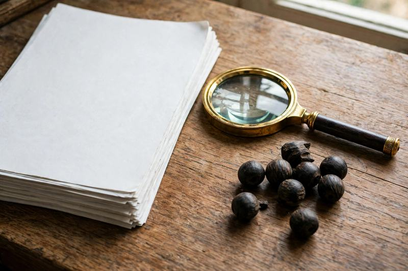

CMA 是中国计量认证，有 CMA 章的报告才有法律效力。CNAS 是实验室认可，证明这家机构的能力达到国际标准。两者都有最好，至少要有 CMA。
没有 CMA 章的“证书”，说白了就是一张打印纸。可以在国家认监委官网查机构资质，查不到的机构，报告不用再看了。
正规证书是“一物一证”：证书上的照片、克重、编号，必须和你手里这件一一对应。照片对不上、克重差得远、编号查不到，都是套证的信号。
最常见的套路是“批量通用证书”：一张证对应一批货，甚至所有货共用一张证。这种证等于没证，因为它证明不了你手里这件。
看报告先看三行：沉香四醇含量（≥0.1%）、醇浸出物、挥发油。再看检测依据是不是 LY/T 2904-2017。只写“经检测为沉香”却没有任何数据的报告，参考价值很低。
注意报告上的样品描述：送检的是“沉香手串”还是“木质样品”？描述越具体越可信，越含糊越要小心。
检测证书只做材质鉴定，确认是不是瑞香科沉香属。它不评定产地、等级、沉水、野生还是种植、商业价值。
所以“有证书的越南芽庄”这个说法，证书只证明了“是沉香”，“越南芽庄”那部分是商家说的，需要溯源来佐证，不能拿证书当产地证明。